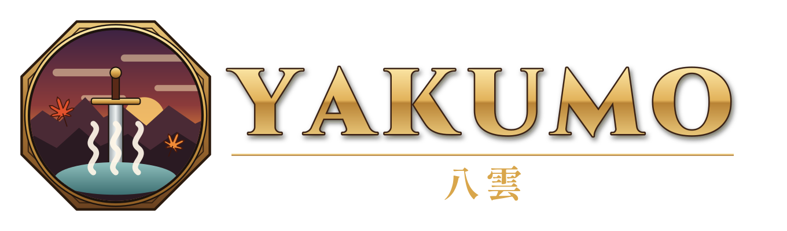

Native recompilation
Yakumo recompiles the game's PSP code ahead of time into a native executable for modern hardware.

Yakumo translates the PSP game code ahead of time, compiles it for your machine, and supplies a native Vulkan-powered runtime around it.
Available for Windows, Linux, Steam Deck, macOS and Android.
Built to play
From first-run installation to multiplayer, Yakumo replaces the PSP system around the game while preserving its timing, save format and feel.
Yakumo recompiles the game's PSP code ahead of time into a native executable for modern hardware.
Vulkan rendering, adjustable resolution, flexible aspect ratios, music, movies and frame interpolation.
Gamepad, keyboard, mouse and touch input with presets, rebinding, chords and analog aiming.
PSP-format saves and backups, ad hoc multiplayer, HD texture packs, mods and layered armor.
Choose your platform
Download a prebuilt release, start Yakumo, and select the disc image from your own legally obtained copy. The guided setup verifies and prepares it locally.
Yakumo.exe.Normal and portable packages keep your data exactly where you expect it.
Native Vulkan and the Deck's built-in controls are supported.
Requires macOS 13 or newer and uses Vulkan through MoltenVK.
Requires Android 10 or later, a 64-bit device and Vulkan 1.1.
Under the hood
Yakumo is built around static recompilation. It is neither a traditional emulator nor a decompilation: the original machine code becomes C++, while a purpose-built runtime supplies the PSP services the game expects.
Yakumo analyzes the game's PSP machine code and translates it into portable C++ ahead of time.
The translated code is compiled for the host machine as a native executable and libraries.
Yakumo provides the kernel, renderer, audio, input, saves and networking around the game.
Built in the open
Test a release, report what you find, improve the runtime or join the conversation. Every useful result moves Yakumo forward.